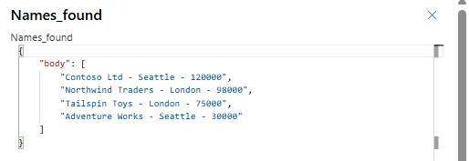

- Power Automate
- Level 2 · Working with data · 7 of 7
OData filter queries
Filter array works on data already in the flow. For data that lives in Dataverse or SharePoint, it is far better to ask the source for only what you need. List rows accepts an OData query: which columns, which rows, in what order, and how many.
The query

| Box | Demo value | Meaning |
|---|---|---|
| Select columns | name,address1_city,revenue | Return only these columns |
| Filter rows | address1_city eq 'Seattle' or revenue gt 70000 | Only rows in Seattle, or with revenue over 70,000 |
| Sort by | revenue desc | Highest revenue first |
| Row count | 10 | At most 10 rows |
The result

Operators you will use
| Operator | Example |
|---|---|
eq / ne | statecode eq 0 (active rows) |
gt ge lt le | revenue ge 50000 |
and / or / not | address1_city eq 'London' and revenue gt 70000 |
contains / startswith / endswith | startswith(name, 'Contoso') |
eq null | emailaddress1 eq null (no email) |
Tip: use column logical names (
address1_city), not display names (Address 1: City). For a lookup column the name is _columnname_value, for example _parentaccountid_value.Putting flow values in a filter
You can mix dynamic content into the filter text. Text values need single quotes around them; numbers do not:
address1_city eq '@{triggerBody()?['text']}' and revenue gt @{variables('MinRevenue')}New to this? Start from the basics optional
OData: a standard way of writing queries in a web address. Dataverse, SharePoint and many Microsoft APIs understand it.
Logical name: the internal, lower-case name of a column, shown in the table's column properties in Power Apps.
Filter at the source: the server does the work and sends back only matching rows, so the flow moves less data and runs fewer actions.
Build it step by step optional
- Add List rows (Microsoft Dataverse) and choose the Accounts table.
- Open Show all to see the advanced boxes. Enter the Select columns, Filter rows and Sort by values from the table above, and Row count 10.
- Add a Select in text mode over the List rows value with
concat(item()?['name'], ' - ', item()?['address1_city']). - Add a Compose with
length(outputs('List_rows')?['body/value'])to count the rows. - Test, then change
ortoandand see the list shrink.
Common mistakes
- Double quotes around text. OData uses single quotes:
name eq 'Contoso Ltd'. - Leaving Select columns empty. Every column comes back, which is slow and makes the run history hard to read.
- Assuming you get every row. List rows returns one page (up to 5,000 rows); turn on pagination in the action's settings when you need more.